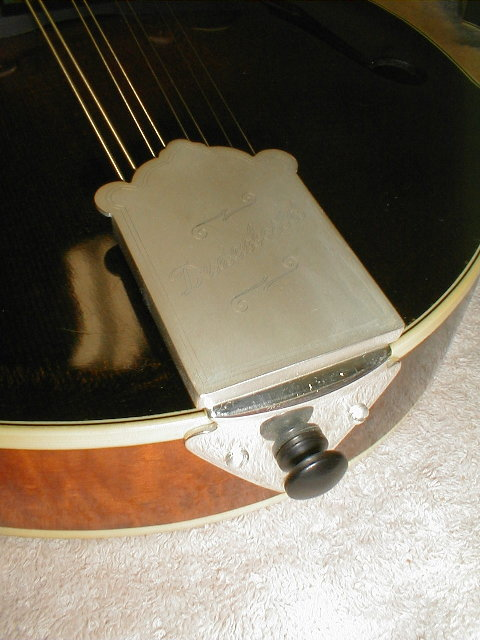
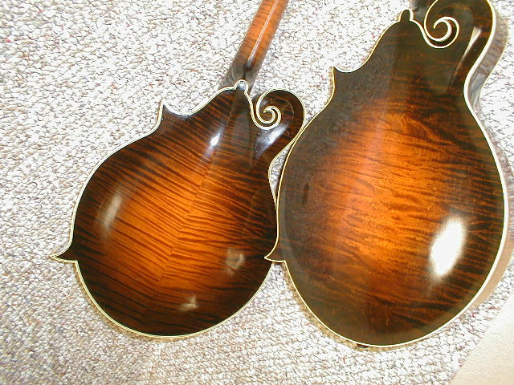

←
12345678910111213
→
Nut, pegs, tailpiece and finished pictures.
- 142) Set-up is the next step. I usually fit the base of the bridge to the top, then fit the nut. In this case, Chris requested an ivory nut (less "chippy" on the leading edge than pearl, especially with the flatwound strings). I take a pencil that is cut in half, layed on the frets, and the fret height marked on the nut. This gives me a line to grind down close to.
- 143) Once the nut is roughed in and slotted, I mount the tuners. In this case, the new Waverly silver plated tuners with mother-of-pearl buttons are fitted. This is one feature Chris wanted from the
beginning. No doubt, they are the finest made. I get a lot of folks asking if they are worth the expense. No doubt, I think they are justified for a fine instrument. There just are none better.
- 144) The tuners are in place.
- 
- 145) Finally (with lousy photos), here it is! The new "Oden" tailpiece!!! Sorry for the poor image quality. It's difficult to get the engraving to show up with the flash. This one is silver plated to match the tuners.
- 146) Now, here's the neat part. Look at the string posts (Ken is getting a patent on these). You put the string on at 90 degrees to the fingerboard, then.....
- 147) urn it around in place. The string stays on the post, freeing both hands to work at the peghead. You'll note there is a small leaf spring on the left side. That applies tension to the cover to keep it from sliding off and preventing rattles.
- 148) The top and base of the tailpiece are machined from solid brass stock, although the production models may be cast. However, to save weight, the mounting flange is bent to shape. The cover slides on and will not pop off, as it's held on with a kind of sliding dovetail arrangement. I think not only is it a beautiful tailpiece, but an improvement in sound is
noticeable. I put one on my mandolin and there was some volume increase, and improvement in sustain.

- 149) Mike Whitehead stopped by to try out the new mandolins.

- 150) Chris's has the small pickguard and Gary's has the full sized guard. (&151)
- 
- 152) Chris' on the left, Gary's on the right.
- 153) This is the first "reverse" or "side" bound mandolin I've built.
- 154) Instead of the tortoise plastic, Chris wanted a Maccassar ebony pickguard. I think it looks great.
←
12345678910111213
→
© Lynn Dudenbostel, 2002.